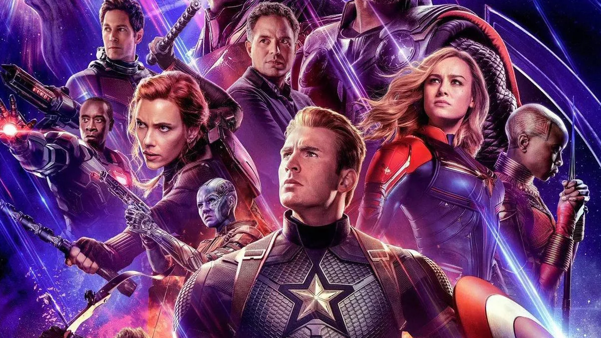
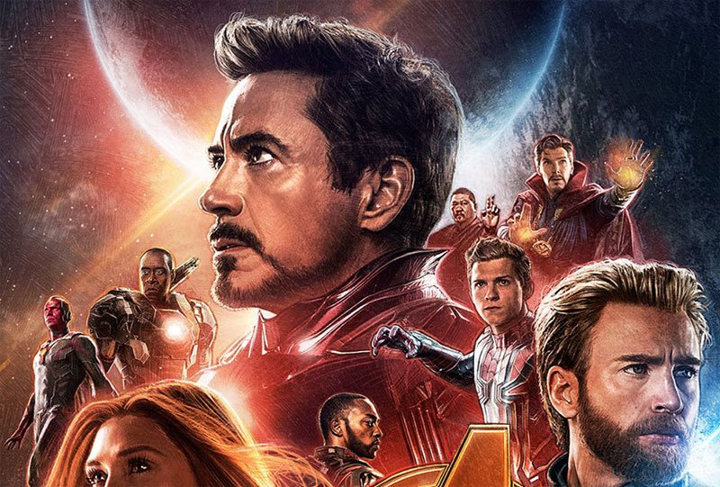
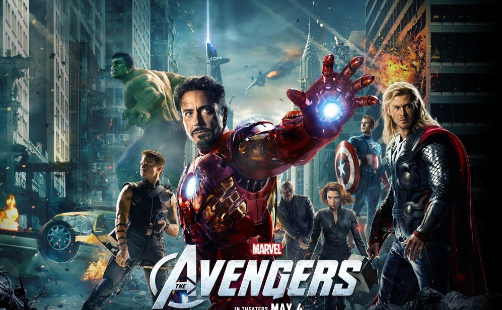
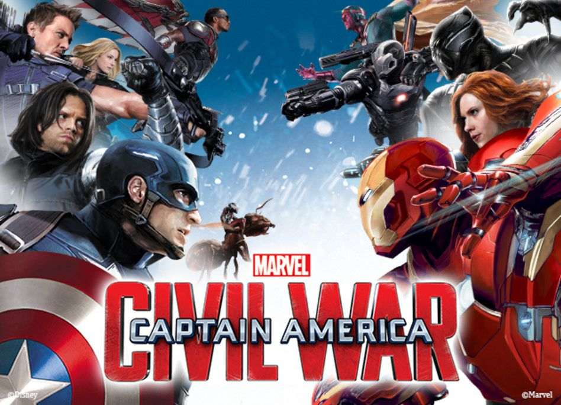
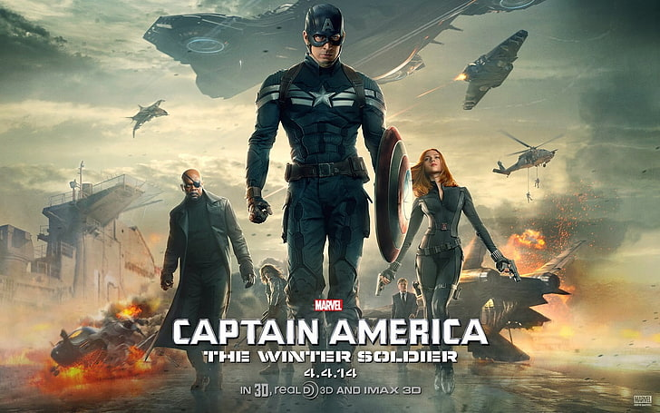

Top 5 Best Movies (According To IMDb):

Avengers: End Game (8.5)
This movie is Chris Evans' final appearance as Captain America, the role which will no doubt define his career when all is said and done, and once again Evans put in a fantastic performance, leading The Avengers to defeat Thanos.
Avengers: End Game is one of the greatest superhero movies ever made, and therefore having it at the top of a list like this is something Evans is no doubt proud of, with this being the culmination of over a decades worth of storytelling.
Download

Avengers: Infinity War (8.5)
Another Avengers movie takes second place in Chris Evans' 10 greatest movies according to IMDb, with the first of two movies that culminated the entire storyline, Avengers: Infinity War, which had the shocking ending from the snap that nobody expected to see.
This was a much darker movie than had been seen before with any Marvel movie, as Thanos came out on top, leaving Evans having to play a heartbroken Captain America who, for once, didn't know what to do.
Download

The Avengers (8)
With a rating of 8 on IMDb, Avengers movie finally put some of Marvel's greatest characters into the same film as they were forced to team up to deal with Loki in this blockbuster movie that really was just the start of a much bigger journey.
Having an Avengers film is something that Marvel fans had wanted for years, and they were not left disappointed once it had happened, with this being an excellent film from start to finish.
Download

Captain America: Civil War (7.8)
However, the film did do a good job at keeping Chris Evans' character the key character to the storyline, with tensions between Captain America and Iron-Man reaching a boiling point, forcing a rift between the group.
The Civil War storyline is one of Marvel's most popular comics, mainly because it pits the heroes against each other, rather than another villain, creating a totally different dynamic to the other movies.
Download

Captain America: Winter Soldier (7.7)
Next on the list is Captain America: Winter Soldier, which has a rating of 7.7 on IMDb, which is far too low (in this writers opinion), for what is one of the best movies in the Marvel Cinematic Universe, pitting Captain America against his best friend, Bucky.
Marvel has always done a good job of having its movies feel like more than just superhero films, and this particular installment really did feel like a thriller for most of the film, with a lot of politics and secrecy being involved.
Download